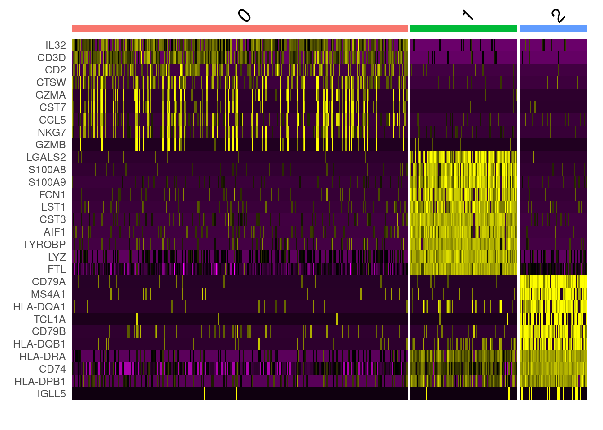
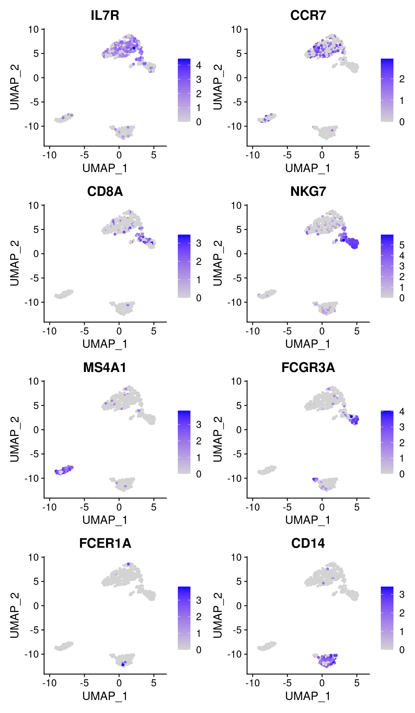
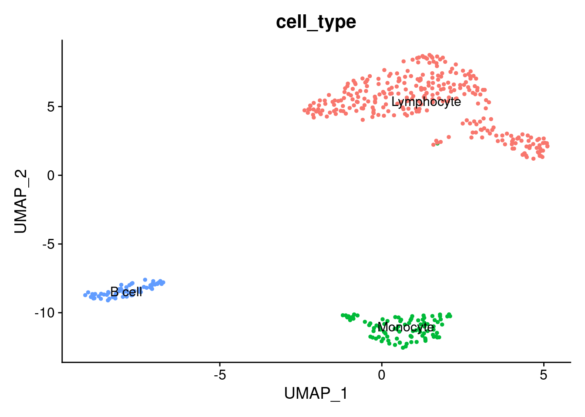

9 Markers visualization
First, we will take top 10 ranked genes based in Log FC and visualize their expression in clusters using a heatmap representation.
top10 <- pbmc.degs %>%
group_by(cluster) %>%
top_n(n = 10, wt = avg_log2FC)
DoHeatmap(pbmc.seurat,
features = top10$gene) + NoLegend()
IL-7 is a marker for naive CD4+ T cells, while GZMB is a marker for CD8 T cells. Then, we can tentatively consider cluster 0 and 2 as CD4 and CD8 T cells, respectively.
We can visualize additional known canonical markers in order to assign cell categories.
canonical_markers <- c('IL7R', ## CD4+ cell
'CCR7', ## Naive CD4+ T cell
'CD8A', ## CD8+
'NKG7', ## NK
'MS4A1', ## B cell marker
'FCGR3A', ## Mono
'FCER1A', ## DC
'CD14' ## Mono
)
FeaturePlot(pbmc.seurat,
features = canonical_markers,
ncol = 2)
Now, we will annotate the cells with their identified identities in the seurat object. We will map the cluster names as follows:
mapping <- data.frame(seurat_cluster=c('0', '1', '2', '3'),
cell_type=c('Lymphocyte',
'B cell',
'NK',
'Monocyte'))
mapping## seurat_cluster cell_type
## 1 0 Lymphocyte
## 2 1 B cell
## 3 2 NK
## 4 3 MonocyteTo assign the new labels we can use the map function from the plyr R package as follows:
pbmc.seurat$'cell_type' <- plyr::mapvalues(
x = pbmc.seurat$seurat_clusters,
from = mapping$seurat_cluster,
to = mapping$cell_type
)Now, we can plot the clusters with the assigned cell types.
DimPlot(pbmc.seurat,
group.by = 'cell_type', ## set the column to use as category
label = TRUE) + ## label clusters
NoLegend() ## remove legends